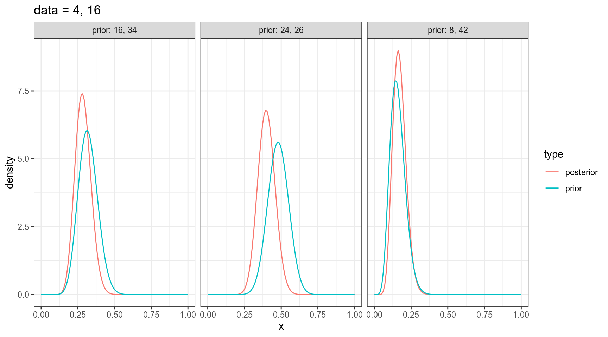

В байесовском подоходе статистический вывод описывается формулой Байеса
\[P(θ|Data) = \frac{P(Data|θ)\times P(θ)}{P(Data)}\]
В литературе можно еще встретить такую запись:
\[P(θ|Data) \propto P(Data|θ)\times P(θ)\]
Предположим, что распределение количества согласных в языках мира можно описать нормальным распределением со средним 22 и стандартным отклонением 6:
Тогда вероятность того, что в выбранных произвольно языках окажется от 23 до 32 согласных, равна интегралу нормального распределения в указанном промежутке:
\[P\left(X \in (23,\, 32) | X \sim \mathcal{N}(\mu = 22,\, \sigma^{2}=6)\right) = ...\]
[1] 0.3860258Когда мы говорим про функцию правдоподобия, мы нашли еще один язык в котором оказалось 33 согласных, и нас интересует, насколько правдоподобна функция нормального распределения со средним 22 и стандартным отклонением 6 при значении переменной 33. Это значение равно функции плотности:
\[L\left(X \sim \mathcal{N}(\mu = 22,\, \sigma^{2}=6)|x = 33\right) = ...\]
[1] 0.01238519В результате мы можем пострить график, на котором будет правдоподобие моделей с разными средними и фиксированным стандартным отклонением.
tibble(x = 0:80) %>%
ggplot(aes(x)) +
stat_function(fun = function(x) dnorm(33, x, 6))+
scale_x_continuous(breaks = c(0:4*20, 33))+
labs(x = TeX("$\\mu$"),
y = TeX("$L(N(\\mu,\\, \\sigma^{2}=6)|x = 33))$"),
title = "Насколько правдоподобны модели с разными μ, если мы наблюдаем значение 33?")А что если у нас не одно наблюдение, а несколько? Например, мы наблюдаем языки с 33 и 26 согласными? События независимы друг от друга, значит, мы можем перемножить получаемые вероятности.
tibble(x = 0:80) %>%
ggplot(aes(x)) +
stat_function(fun = function(x) dnorm(33, x, 6)*dnorm(26, x, 6))+
scale_x_continuous(breaks = c(0:4*20, 33, 26))+
labs(x = TeX("$\\mu$"),
y = TeX("$L(N(\\mu,\\, \\sigma^{2}=6)|x = 33))$"),
title = "Насколько правдоподобны модели с разными μ, если мы наблюдаем значения 26 и 33?")Самое важное:
Интеграл распределения вероятностей равен 1. Интеграл правдоподобия может быть не равен 1.
Функция правдоподобия, конечно, определена и на дискретных распределениях. Посчитайте функцию правдоподобия для модели, предполагающей “честный” шестигранный кубик, если выпало три раза шесть (ответ округлите до 3 знаков после запятой)?
L(p⚅ = 1/6|x = ⚅⚅⚅) = …
Посчитайте значение правдоподобия модели \(\mathcal{N}(\mu = 910,\, \sigma=150)\) для встроенного датасета Nile.
В датасете c грибами (взят c kaggle) представлено следующее распределение по месту обитания:
df <- read_csv("https://github.com/agricolamz/2019_BayesDan_winter/blob/master/datasets/mushrooms.csv?raw=true")
df %>%
count(class, habitat) %>%
group_by(class) %>%
mutate(prop = n/sum(n)) %>%
ggplot(aes(class, prop, fill = habitat, label = round(prop, 3)))+
geom_col()+
geom_text(position = position_stack(vjust = 0.5), color = "white")Мы нашли некоторый новый вид грибов на лужайке (grasses). Какой это может быть гриб: съедобный или ядовитый? У нас нет никаких идей, почему бы нам отдать предпочтения той или иной гипотезе, так что будем использовать неинформативное априорное распределение:
tibble(model = c("edible", "poisonous"),
prior = 0.5,
likelihood = c(0.335, 0.189),
product = prior*likelihood,
posterior = product/sum(product))Вот мы и сделали байесовский апдейт. Теперь апостериорное распределение, которые мы получили на предыдущем шаге, мы можем использовать в новом апдейте. Допустим, мы опять нашли этот же вид гриба, но в этот раз в лесу (woods).
tibble(model = c("edible", "poisonous"),
prior_2 = c(0.639, 0.361),
likelihood_2 = c(0.447, 0.324),
product_2 = prior_2*likelihood_2,
posterior_2 = product_2/sum(product_2))Вашего друга похитили а на почту отправили датасет, в котором записаны данные о погоде из пяти городов. Ваш телефон зазвонил, и друг сказал, что не знает куда его похитили, но за окном легкий дождь (Rain). А в какой-то из следующих дней — сильный дождь (Rain, Thunderstorm). Сделайте байесовский апдейт и предположите, в какой город вероятнее всего похитили друга (форма принимает латиницу).
Биномиальные данные возникают, когда нас интересует доля успехов в какой-то серии эксперементов Бернулли.
Биномиальное распределение — распределение количества успехов эксперементов Бернулли из n попыток с вероятностью успеха p.
\[P(k | n, p) = \frac{n!}{k!(n-k)!} \times p^k \times (1-p)^{n-k} = {n \choose k} \times p^k \times (1-p)^{n-k}\] \[ 0 \leq p \leq 1; n, k > 0\]
\[P(x; α, β) = \frac{x^{α-1}\times (1-x)^{β-1}}{B(α, β)}; 0 \leq x \leq 1; α, β > 0\]
Бета функция:
\[Β(α, β) = \frac{Γ(α)\times Γ(β)}{Γ(α+β)} = \frac{(α-1)!(β-1)!}{(α+β-1)!} \]
tibble(x = seq(0, 1, length.out = 100),
density = dbeta(x = x, shape1 = 8, shape2 = 42)) %>%
ggplot(aes(x, density))+
geom_point()+
geom_line()+
labs(title = "Бета распределение α = 8, β = 42")Можно поиграть с разными параметрами:
\[\mu = \frac{\alpha}{\alpha+\beta}\]
\[\sigma^2 = \frac{\alpha\times\beta}{(\alpha+\beta)^2\times(\alpha+\beta+1)}\]
\[Beta_{post}(\alpha_{post}, \beta_{post}) = Beta(\alpha_{prior}+\alpha_{data}, \beta_{prior}+\beta_{data}),\] где \(Beta\) — это бета распределение
tibble(x = rep(seq(0, 1, length.out = 100), 6),
density = c(dbeta(unique(x), shape1 = 8, shape2 = 42),
dbeta(unique(x), shape1 = 16, shape2 = 34),
dbeta(unique(x), shape1 = 24, shape2 = 26),
dbeta(unique(x), shape1 = 8+4, shape2 = 42+16),
dbeta(unique(x), shape1 = 16+4, shape2 = 34+16),
dbeta(unique(x), shape1 = 24+4, shape2 = 26+16)),
type = rep(c("prior", "prior", "prior", "posterior", "posterior", "posterior"), each = 100),
dataset = rep(c("prior: 8, 42", "prior: 16, 34", "prior: 24, 26",
"prior: 8, 42", "prior: 16, 34", "prior: 24, 26"), each = 100)) %>%
ggplot(aes(x, density, color = type))+
geom_line()+
facet_wrap(~dataset)+
labs(title = "data = 4, 16")
Подробнее см.:
Ссылка на домашнее задание 2